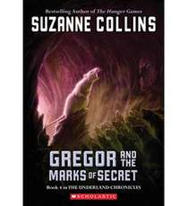

The Underland Chronicles
 |
Gregor the Overlander
Meet Gregor, a kid from New York City, who falls out of his laundry room into a fantastical subterranean world called the Underland.
Accompanied by his toddler sister, Boots, he encounters giant talking creatures-- cockroaches, bats, spiders and rats--
and an unusual society of humans. And they’re all expecting him...(Scholastic Press, 2003)
|
 |
Gregor and the Prophecy of Bane
When giant roaches kidnap Boots and spirit her back to the Underland, Gregor follows to retrieve her. Soon he discovers that they are both
implicated in “The Prophecy of Bane,” which warns of the dangers of a terrifying white rat. Guess whose job it is to destroy it?
(Scholastic Press, 2004)
|
 |
Gregor and the Curse of the Warmblookds
Gregor and Boots must return to the Underland to help find a cure for a deadly plague called the Curse of the Warmbloods. Gregor is desperate
to succeed because, along with several of his Underland friends, a member of his own family is stricken. (Scholastic Press, 2005)
|
|  |
Gregor and the Marks of Secret
Gregor sets out to solve a mystery involving the Underland mice and ends up discovering a terrible secret. This book leads right into the fifth
and final book of the series, "Gregor and the Code of Claw."(Scholastic Press, 2006)
|
 |
Gregor and the Code of Claw
Everyone in the Underland has been taking great pains to keep The Prophecy of Time from Gregor. Gregor knows it must say something awful but he
never imagined just how awful: It calls for the warrior's death. Now, with an army of rats approaching, and his mom and sister still in Regalia,
Gregor the warrior must gather up his courage to help defend Regalia and get his family home safely. The entire existence of the Underland is
in Gregor's hands, and time is running out. There is a code to be cracked, a mysterious new princess, Gregor's burgeoning dark side, and a war
to end all wars.(Scholastic Press, 2007)
|